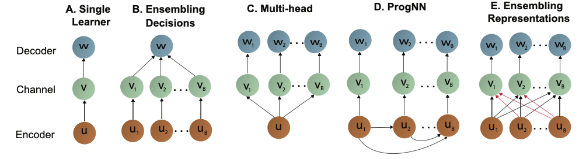

<div> <img src= "images/jhu.png" alt="jhu logo" align="right" width = "240" height= "125"> </div> <br> <br> <br> ## My Projects Jayanta Dey, [Neurodata](https://neurodata.io), [JHU](https://www.jhu.edu/) <center>  <br> </center> --- ## Overview - Undergraduate Research: Ultrasound image deconvolution - MS Research: Ultrasound image despeckling - PhD Research: Out-of-distrbution learning-- theory and practice - Others: An Ensemble SVM-based Approach for Voice Activity Detection (ICECE 2018) - Others: Heritability of human connectomes --- ## Framework for Ultrasound Imaging <center>  </center> --- ## Deconvolution (SIMO model) <center>  </center> Dey, Jayanta, and Md Kamrul Hasan. "Ultrasonic tissue reflectivity function estimation using correlation constrained multichannel flms algorithm with missing rf data." Biomedical Physics & Engineering Express 4.4 (2018): 045024. --- ## Despeckling (SIMO model) <center>  </center> Dey, Jayanta, and Md Kamrul Hasan. "Multiframe-based Adaptive Despeckling Algorithm for Ultrasound B-mode Imaging with Superior Edge and Texture." arXiv preprint arXiv:1912.00815 (2019). --- ### Lifelong Learning: Theory and Practice [JHU](https://www.jhu.edu/): Jayanta Dey | Hayden Helm | Ronak Mehta | Will LeVine | Carey E. Priebe | Joshua T. Vogelstein <br> [Microsoft Research](https://www.microsoft.com/en-us/research/): Weiwei Yang | Jonathan Larson | Bryan Tower | Chris White <br> <br> <br> <br> <br> <br> <br> <br> <br> <br> <br> <br> <br> <br> <br> Dey, Jayanta, et al. "Representation ensembling for synergistic lifelong learning with quasilinear complexity." arXiv preprint arXiv:2004.12908 (2020). Dey, Jayanta, et al. "Towards a theory of out-of-distribution learning." arXiv preprint arXiv:2109.14501 (2021). --- ## Lifelong Learning in AI - Given a .ye[sequence] of data associated with different tasks - .ye[Forward transfer]: transfer from past tasks to future tasks - .ye[Backward transfer]: transfer from future tasks to past tasks - .ye[Catastrophic forgetting]: learning new tasks causes performance .ye[degradation] on previous tasks -- ## Natural Intelligence - Biological/natural intelligence (BI) is .ye[Lifelong]: - learning a 2nd language improves 1st language - learning to run improves walking --- ## Goals of this work - Formalize the above AI claims - Develop algorithms that move beyond catastrophic forgetting --- ## A simple learning example - $s =(x_i,y_i)$, $i \in \lbrace 1, 2, \ldots, 200 \rbrace$ - $x \in \mathbb{R}^2$ - $y \in \lbrace 0,1 \rbrace$ - we desire to learn a classifier that minimizes expected misclassification rate --- <img src="images/rock20/s2.png" style="position:absolute; top:0px; left:100px; height:100%;"/> --- <img src="images/rock20/s3.png" style="position:absolute; top:0px; left:100px; height:100%;"/> --- <img src="images/rock20/s3a.png" style="position:absolute; top:0px; left:100px; height:100%;"/> --- ## But there is a problem... "Training on a new set of items may drastically disrupt performance on previously learned items." -- McCloskey & Cohen, 1989 --- ## Lifelong Learning Schema  --- ## Results <center>  </center> --- ### Deep Discriminative to Kernel Density Networks for In- and Out-of-distribution Calibrated Inference [JHU](https://www.jhu.edu/): Jayanta Dey | Will LeVine | Haoyin Xu | Ashwin De Silva | Joshua T. Vogelstein <br> <br> <br> <br> <br> <br> <br> <br> <br> <br> <br> <br> <br> <br> <br> <br> Dey, Jayanta, et al. "Deep Discriminative to Kernel Generative Networks for Calibrated Inference." arXiv preprint arXiv:2201.13001 (2022). --- ## A funny experiment with ChatGPT <center>  </center> --- ## Overcondient on Wrongly Classified Labels <center>  </center> --- ## What is calibration? We say a model is calibrated if <br> <center> $\hat{P}(y|x) = P(y|x)$ </center> Indirect way of measuring it <center> $P(Y=y|\hat{P} = p) = p$ </center> --- ## Existing methods ### .w[In-distribution Calibration] - Platt Scaling - Isotonic Regression - Temperature Scaling - Ensemble Methods ### .w[OOD Calibration] - Discriminative - Generative --- ## What are we solving? - Address in-distribution (ID) and out-of-distribution (OOD) calibration as a continuum. - Address the confidence calibration problems for both ReLU-nets and random forests from a common ground. - Provide guarantees for asymptotic performance. - Do unsupervised OOD calibration. --- ## Problem Formulation - Consider a supervised learning problem with $\mathrm{IID}$ training samples $\{ (\mathbf{x}\_i, y\_i)\}\_{i=1}^n$ - $(X, Y) \sim P\_{X, Y}$, where $X \sim P\_X$ is a $\mathcal{X} \subseteq \mathbb{R}^d$ valued input and $Y \sim P\_Y$ is a $\mathcal{Y} = \{1, \cdots, K\}$ valued class label. - We define, $\mathcal{S}$ as high density region of $P\_{X}$. We want to estimate $g\_y(\mathbf{x})$ such that: <br> $$g\_y(\mathbf{x}) = P\_{Y|X}(y|\mathbf{x}), ~\text{if} ~\mathbf{x} \in \mathcal{S}$$ $$ = P\_Y(y), ~\text{if} ~\mathbf{x} \notin \mathcal{S}$$ --- ## How Deep Discriminative Networks Partition <br> <center>  </center> --- ## Traditional Approach The set of learned polytopes $(1,2, \cdots, p)$ $$\hat{f}\_y(\mathbf{x}) = \sum\_{r=1}^{p} (a\_r^T \mathbf{x} + b\_r)I(\mathbf{x} \in Q\_r)$$ --- ## Our Approach ### .w[We replace the affine activations:] $$\hat{f}\_y(\mathbf{x}) = \frac{1}{n\_y}\sum\_{r \in \mathcal{P}}n\_{ry} G(\mathbf{x}, \hat{\mu}\_r, \hat{\Sigma}\_r)I(r = r^*\_{\mathbf{x}}) + \frac{b}{n}$$ $$\text{where}, r^*\_{\mathbf{x}} = argmin~\_r ~|\mu\_r - \mathbf{x}|$$ #### .w[We estimate $g\_y(x)$ as:] $$\hat{g}\_y(\mathbf{x}) = \frac{\hat{f}\_y(\mathbf{x}) \hat{P}\_Y(y)}{\sum\_{k=1}^{K} \hat{f}\_k(\mathbf{x}) \hat{P}\_Y(k)}$$ --- ## Acheiving Goal \#2: Simulation Experiments <center>  </center> --- ## Simulation Experiments (Continued) <center>  </center> --- ## Acheiving Goal \#2: Benchmark Data Study <center>  </center> --- ### Acknowledgements <!-- <div class="small-container"> <img src="faces/ebridge.jpg"/> <div class="centered">Eric Bridgeford</div> </div> <div class="small-container"> <img src="faces/pedigo.jpg"/> <div class="centered">Ben Pedigo</div> </div> <div class="small-container"> <img src="faces/jaewon.jpg"/> <div class="centered">Jaewon Chung</div> </div> --> <div class="small-container"> <img src="faces/jovo.png"/> <div class="centered">Carey Priebe</div> </div> <div class="small-container"> <img src="faces/cep.png"/> <div class="centered">Carey Priebe</div> </div> <div class="small-container"> <img src="faces/hao.jpg"/> <div class="centered">Hao</div> </div> <div class="small-container"> <img src="faces/ashwin.png"/> <div class="centered">Ashwin De Silva</div> </div> <div class="small-container"> <img src="faces/will.jpg"/> <div class="centered">Will LeVine</div> </div> <!-- <div class="small-container"> <img src="faces/mim.jpg"/> <div class="centered">Michael Miller</div> </div> <div class="small-container"> <img src="faces/dtward.jpg"/> <div class="centered">Daniel Tward</div> </div> --> <!-- <div class="small-container"> <img src="faces/vikram.jpg"/> <div class="centered">Vikram Chandrashekhar</div> </div> <div class="small-container"> <img src="faces/drishti.jpg"/> <div class="centered">Drishti Mannan</div> </div> --> <!-- <div class="small-container"> <img src="faces/kwame.jpg"/> <div class="centered">Kwame Kutten</div> </div> --> <!-- <div class="small-container"> <img src="faces/perlman.jpg"/> <div class="centered">Eric Perlman</div> </div> --> <!-- <div class="small-container"> <img src="faces/bcaffo.jpg"/> <div class="centered">Brian Caffo</div> </div> --> <!-- <div class="small-container"> <img src="faces/minh.jpg"/> <div class="centered">Minh Tang</div> </div> --> <!-- <div class="small-container"> <img src="faces/avanti.jpg"/> <div class="centered">Avanti Athreya</div> </div> --> <!-- <div class="small-container"> <img src="faces/vince.jpg"/> <div class="centered">Vince Lyzinski</div> </div> --> <!-- <div class="small-container"> <img src="faces/dpmcsuss.jpg"/> <div class="centered">Daniel Sussman</div> </div> --> <!-- <div class="small-container"> <img src="faces/shangsi.jpg"/> <div class="centered">Shangsi Wang</div> </div> --> <div class="small-container"> <img src="faces/tyler.jpg"/> <div class="centered">Tyler Tomita</div> </div> <div class="small-container"> <img src="faces/alig.jpg"/> <div class="centered">Ali Geisa</div> </div> <!-- <div class="small-container"> <img src="faces/gkiar.jpg"/> <div class="centered">Greg Kiar</div> </div> --> <!-- </div><span style="font-size:200%; color:red;">♥, 🦁, 👪, 🌎, 🌌</span> --> --- ## Questions? ---